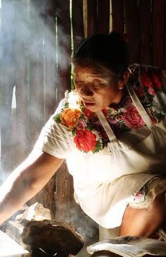
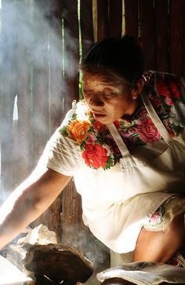

Acerca de nosotros
La Fondita fue fundada por la abuela Doña Petra en el año 1985, conquistando a toda la colonia Villarreal con sus famosas enchiladas, ganando gran fama y renombre llegando a ser como la conocemos hoy en día.

La favorita de los famosos
Servicio a domicilio
Abierto de lunes a domingo
Petfriendly
La Fondita fue fundada por la abuela Doña Petra en el año 1985, conquistando a toda la colonia Villarreal con sus famosas enchiladas, ganando gran fama y renombre llegando a ser como la conocemos hoy en día.



Dirección: Calle Benito Juarez #32, Colonia Villarreal, c.p. 45329, CDMX, México
Teléfono: 55-1234-5521
Correo: contacto@lafondita.com
Síguenos en nuestras redes sociales